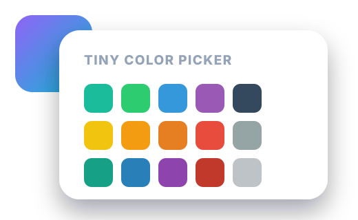

1. Default picker
Default palette plus recent colors.
A compact color picker for fx-base with recent colors, native/custom colors, clear color, native light/dark color schemes, dropdown-up support, parent containers and CSS variables for project styling.

Default palette plus recent colors.
Supports an intentionally empty value, a native visual color chooser and manual #RGB / #RRGGBB entry.
.dropdown-up is still supported. CSS owns the up/down transform and animation.
No theme option exists. This picker automatically follows the document's
native color-scheme. Use the switch above to see it change live.
Colors are normalized, uppercased and de-duplicated automatically.
The dropdown is rendered inside the specified parent to preserve the dialog stacking context.
setValue(), clear() and toggle(). Theme state stays outside the component.
Palette only: no recent colors and no custom field.
<style>
:root {
color-scheme: light dark;
}
</style>
<link rel="stylesheet" href="TinyColorPicker.css">
<script src="TinyColorPicker.js"></script>
<script>
const picker = new TinyColorPicker(document.querySelector('.colorpicker'), {
allowCustomColor: true,
allowClearColor: true,
parentContainer: '.tiny-swal-popup'
});
</script>